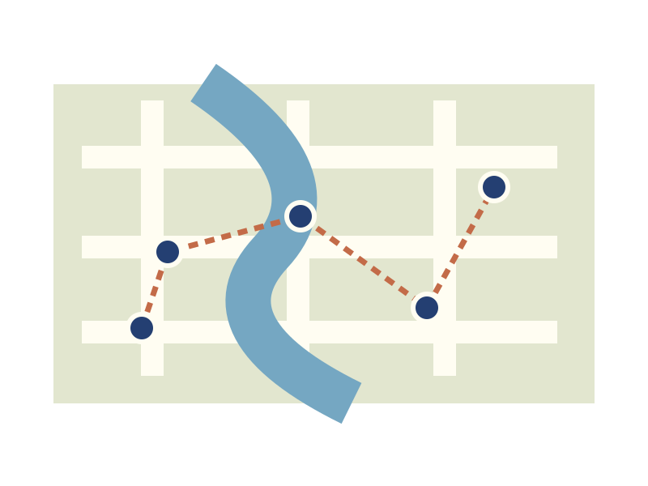

Take the long way around.
A city-walk planning notebook: a market lane, a riverside pause and a little time left unplanned. Build a day around what interests you.

This is an imagined district used to practise planning, not a live map or a promise of opening hours. Adapt the rhythm to a real place using current local information.